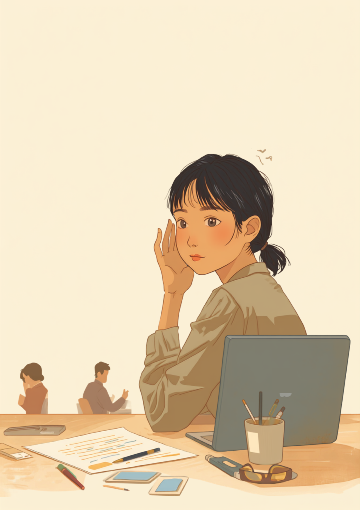
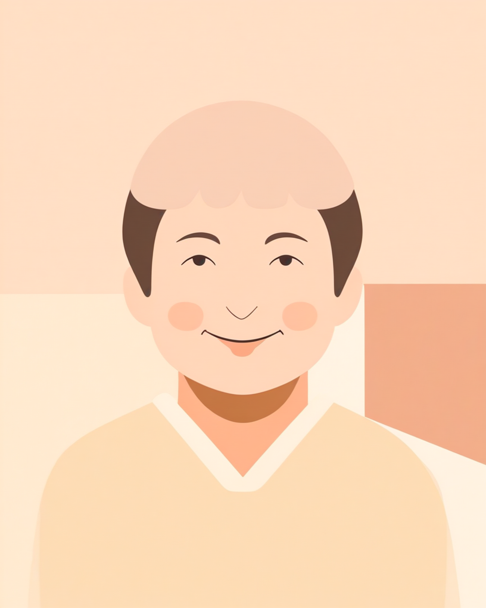

「え、今なんて?」と聞き返すたび、気まずい空気になる
就労支援の現場で関わってきた中で、難聴のある方から繰り返し聞いてきた言葉があります。「会議中に聞き返すと、一瞬空気が止まるんです」というものです。難聴は、外見からはほとんど分かりません。それゆえに、聞き返した瞬間に相手が一瞬戸惑う表情を浮かべたり、「さっき言ったのに」という顔をされたりすることがあるようです。
本人にとっては、聞こえなかった部分を悪気なく聞き返しているだけです。それでも周囲には「話を聞いていなかった人」「上の空だった人」という印象だけが残ってしまうことがあります。聞こえていないのではなく、聞き取るために人一倍集中しているのに、その努力は見た目には伝わりにくいというずれが生まれやすくなります。
「入社して3年目なんですけど、いまだに会議で聞き返すのが怖いです。特に部長が早口なタイプで、一回で聞き取れないことが多くて。『今の部分もう一度いいですか』って言うと、一瞬『え、また?』みたいな顔をされることがあって、それが地味にきついです。正直言うと、聞こえなかったふりして相槌だけ打ったこともあります。あとで話がずれてるのがバレて、それはそれで気まずかったですけど。」

マスク・電話・雑談、「聞こえているはず」なのに聞き取れない理由
難聴のある方の多くは、聞こえない部分を相手の口の動きや表情から補いながら会話を成立させているとされています。ところがマスクをつけたまま話されると、その手がかりが一気になくなってしまいます。会議室で誰かがマスク越しに話しかけてきたとき、声だけでは聞き取れず、口元も見えず、結局何も分からないまま相槌だけ打ってしまう。そんな場面が増えたという声も聞かれます。
電話も、特に苦手意識を持つ方が多い場面です。表情も口の動きも一切見えず、声だけを頼りにするしかないため、相手の名前や用件を一度で聞き取れず、何度も聞き返さなければならないことがあります。「電話が鳴ると、出る前に身構えてしまう」という声も少なくないようです。
このように聞こえているように見える瞬間ほど、実は多くの集中力を使っていることがあります。マスク越しの会話、電話、複数人での雑談は、いずれも聞こえの手がかりが少なくなる場面であり、「聞こえているはず」という周囲の前提と、本人が感じている負担との間にずれが生まれやすい場面でもあります。
「営業をしているんですが、正直、電話が一番つらいです。取引先からの電話で聞き取れなかった単語があると、聞き返すタイミングを逃して、なんとなく分かったふりで話を進めてしまうことがあって。あとで内容がずれていたことに気づいて、先輩に確認してもらう羽目になったこともあります。あと地味に効くのが、休憩中の雑談です。何人かで盛り上がってるところに入っていけなくて、気づいたら一人でスマホ見てる、みたいなことがよくあります。」
職場にどう伝える、具体的な場面に絞った配慮のお願い方
具体的な場面に絞って伝えるという考え方
難聴の仕組みや聞こえ方をすべて説明しようとすると、かえって伝わりにくくなることがあります。業務に関わる具体的な場面だけに絞って伝える方法が、双方にとって負担が少ないとされています。
- 「話しかけるときは、後ろからではなく正面から声をかけてもらえると助かります」
- 「電話よりチャットやメールでの連絡を優先してもらえると助かります」
- 「マスクをつけたまま話す場面では、もう少しゆっくり話してもらえると助かります」
- 「会議の内容は、あとで簡単に要点を共有してもらえると助かります」
聞こえの程度や原因まで詳しく伝える義務はありません。信頼できる上司や人事担当者に、業務に関わる範囲でまず共有し、そこからチーム内に必要な情報だけ広げてもらう、という進め方をとっている方もいるようです。就職活動の段階から聞こえの特性を伝えておくことで、入社後の調整がしやすくなったという声も聞かれます。
使える制度と、一人で抱えないための相談先
身体障害者手帳という選択肢
聴覚障害の身体障害者手帳は、聴力検査などの結果によって6級・4級・3級・2級のいずれかに該当する場合に交付されるとされています。等級の基準は聴力レベルによって異なるため、詳しくは耳鼻咽喉科や自治体の障害福祉窓口に確認するのが確実です（2026年9月時点の情報です）。手帳を取得すると、障害者雇用枠での就職や、企業側の合理的配慮を前提にした働き方を選びやすくなる場合があります。
補聴器の購入費用を助成する制度
身体障害者手帳をお持ちの場合、障害者総合支援法に基づく補装具費支給制度により、補聴器の購入費用の一部が助成される場合があるとされています。自己負担の割合や対象となる補聴器の種類は、等級や所得によって異なる仕組みのため、詳しくはお住まいの自治体の福祉窓口にご確認ください（2026年9月時点の情報です）。
相談できる窓口
- 耳鼻咽喉科（聞こえの検査や、手帳診断書の相談）
- 職場に選任されている産業医（50人以上の事業場に選任義務あり）
- 自治体の障害福祉窓口、身体障害者手帳の相談窓口
- 就労移行支援事業所（配慮の伝え方を含めた就労準備や職場との調整）
よくある質問
関連記事
この記事に、聞いてみたいことはありますか？
「自分の場合はどうなんだろう」と思ったことを、気軽に書いてみてください。いただいた質問は個別にお返事したうえで、匿名で記事にすることがあります。
mimemime代表。就労支援の現場経験をもとに、障がいのある方の働く不安に寄り添う記事を執筆。